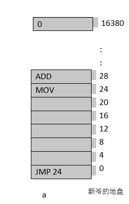
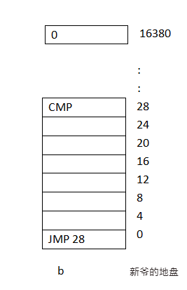
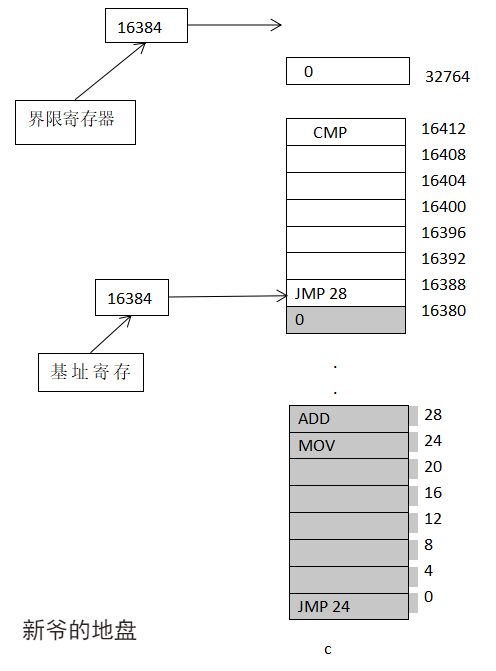
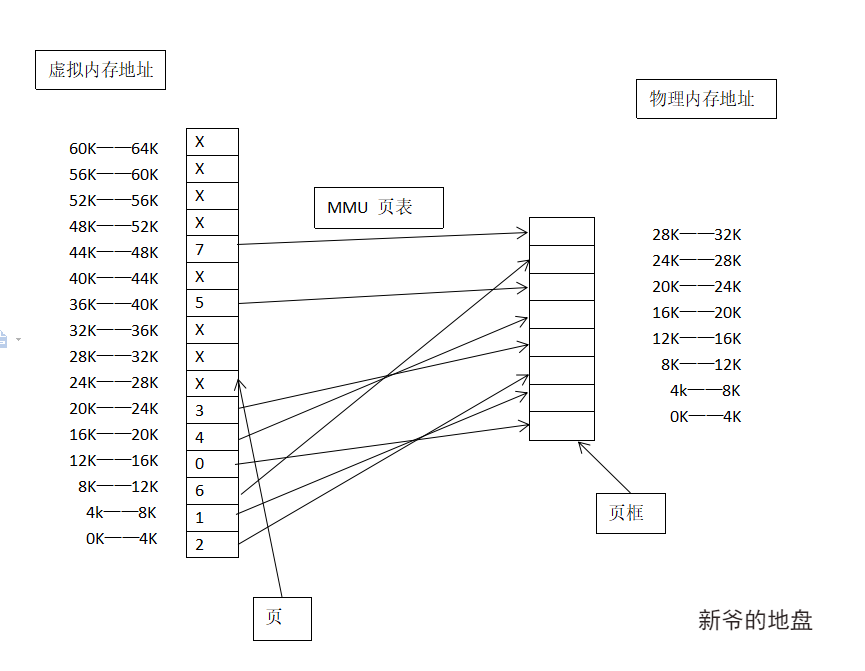

在计算机的世界里，有两个比较宝贵的资源，CPU和内存。这是每个进程都要争抢的资源。这篇文章说说操作系统是怎样进行内存管理的。
因水平有限，加之内存管理涉及的细节又很多，所以这里只是简单的介绍内存管理的一些关键概念及发展过程。
直面物理内存
在很久很久以前，内核与用户进程都是直接操作物理内存的。那个时候的物理内存模型大概可以简化成这样。物理内存按照固定大小编号，每个编号代表一个固定的二进制位。我们就像使用门牌号一样使用物理内存编号。这种模型的特点就是简单直接，但是带来的问题也很多而且很严重。
问题1：用户进程之间内存冲突。
在这个模型中，如果同时运行多个进程，就会引发内存冲突。比如进程A访问16号物理内存，而这时进程B很有可能也访问16号物理，引发冲突。相当于你想进入16号房间，另一个人也想进入同样的房间，最后你俩肯定干起来。
问题2：破坏操作系统。
因为内核跟用户进程都是直接操作物理内存，所以难免用户程序就跑去操作内核使用的内存了，引发系统瘫痪。
其实这个模型也不是一无是处。因为足够简单，而且直接操作硬件，所以在简单的嵌入式系统，收音机，微波炉的电脑版里，还是采用的这种方式。对了BIOS也是采用的这种方式。
继续前进，既然这种方案有诸多严重问题，那么我们就需要找到一个新的方案。注意，我们要解决的问题是同时运行多个进程，但不会造成访问物理内存地址冲突。
地址空间
地址空间：一个进程可用于寻址内存的一套地址空间。每个进程都有一个自己的地址空间，并且这个地址空间独立于其他进程的地址空间（除了一些特殊情况可以共享）。
地址空间的概念，形象一点儿说类似于我们的电话号码，比如我们的手机号就是一个11位的阿拉伯数字组成的地址空间。生活中还有很多其他的地址空间概念的应用。
基址寄存器与界限寄存器
虽然每个进程都有自己的地址空间（如下图a与b），但是还没有解决访问物理地址冲突的问题。因为进程A的16号内存跟进程B的16号内存很有可能还是同一块内存。
 
为了解决这个问题，发明了两个特殊的硬件，基址寄存器和界限寄存器。(关键时刻还得硬件工程师)
基址寄存器：存储进程访问内存的起始地址。
界限寄存器：存储进程的内存长度。
举个例子
当第一个程序运行时，基址寄存器和界限寄存器的值分别为0,16384,运行第二个进程的的时候，这些值分别是16384和32768。如果第三个16KB的程序进来那么基址寄存器的值时32768和16384。如下图所示

每个进程的内存地址在送到物理内存之前。都会自动加上基址寄存器的值。这样每个进程都会在固定的内存范围内活动，这样就可以解决多个进程同时在内存中的问题。
为了避免用户进程随意更改寄存器中的值引起内存访问错误，很多系统中基址寄存器和界限寄存器都是只有操作系统可以访问。
这个模型看起来完美解决了多道程序运行问题，但是问题在于，每次访问内存都要做加法跟比较运算，加法运算速度太慢了。而且进程的内存都是动态变化的，所以这个方法也不是最优解。
交换内存
我们先来看另外一个问题—-内存超载。
每个程序员都希望有一块无限大的内存，但是这不现实。就像你想拥有无限多的钱一样。软件膨胀的速度，跟人的欲望是一样的，永远得不到满足。
交换内存：把一个进程完全载入内存，运行一段时间之后存入磁盘。然后将另外一个进程载入内存，继续运行。周期性进行交替,把空闲进程主要存储在磁盘上。
这个方案既可以解决同时运行多进程的问题，又可以解决内存超载问题。因为要频繁的往磁盘写入数据，但硬盘的写入速度又远没有内存快。所以这个方案一样不是我们寻找的最优解。
值得一提的是，虽然这个方案不能作为主流的内存管理方案，但是交换内存的概念还是被保留了下来，并且在实际应用中发挥了很大作用，后面还会提到。
虚拟内存
为了解决同时运行多个程序，以及内存超载问题。所有操作系统的终极解决方案——虚拟内存。虚拟内存概念厉害之处在于，使程序只有一部分载入内存的情况下就可以运行。不用像上面介绍的那些模型一样，要全部载入内存，才能运行进程。
虚拟内存：每个程序拥有自己的虚拟地址空间，这个空间被分割成多块，每一块被称为一页或者页面（page）。每一页有连续的地址空间。这些页被映射到物理内存。但是并不是所有页都必须在内存中才能运行程序。当程序引用的页在物理内存时，由操作系统完成映射。当程序访问的页不在物理内存时（缺页中断），由操作系统负责把需要的页载入内存。当一个程序等待一部分内容读入内存时，可以把CPU交给其他进程。
上面这段话，有几个关健点，我帮大家梳理一下。
虚拟地址
程序能够寻址的最大空间，所谓虚拟地址就是逻辑上假想出来的，真实没有那么大。32位操作系统最大的虚拟寻址空间就是2^32 大概时4G的空间 ，64位的操作系统最大虚拟寻址空间是2^64，抱歉我算不出来有多大。
页面
虚拟地址空间按照固定大小划分成称为页面（page）的若干单元。
页框
在物理内存中与虚拟页面一一对应的单元称为页框（page frame）。页面和页框的大小通常是一样的。
如何映射–内存管理单元及页表。
将虚拟地址发送到内存管理单元（Memory Management Unit,MMU包含在CPU里），然后通过页表把虚拟地址映射为物理地址。页表的本质是个函数，输入虚拟地址，输出真实物理地址。
缺页中断
我们知道进程的虚拟寻址空间很大,但是物理内存肯定没有那么大，也就是虚拟地址不可能全部映射到物理内存。当访问的页面不在物理内存时，就发生了页面中断，这个时候需要页面调度算法帮忙，把暂时不需要的页面置换到交换区，把需要的页面加载进内存。在等待换入页面的过程中，CPU会去处理其它进程。Linux会在磁盘中专门开辟出一个区域作为内存的交换区，以区别于IO系统的磁盘空间。
举个例子
我们来简单看一下，如何把虚拟内存地址映射为真实的物理内存地址。假设有一台可以产生16位地址的计算机，最大寻址范围是0到64K(2^16),这台计算机实际物理内存是32K。我们虽然可以编写64K的程序，但他们却不能完全被载入内存。在磁盘上必须有一个64K大的空间，保证程序片段在需要时可以被载入内存。如下图

共享内存
为了更高效的使用内存，我们希望更多的共享内存。
多进程共享页面
在实际操作中，通常将指令空间和数据空间分开。指令空间的页面很方便共享，因为指令空间的内容是只读的。如果是数据空间共享页面，要么保证数据是只读的，要么在进行数据空间进行写操作时，复制一份副本出来。比如fork调用，只要有一个进程进行了写操作，就会拷贝一份副本，这样每个进程都是可读写的。这个过程叫做写时拷贝。多进程共享库
这是共享内存的另外一个维度，共享页面时按照页面维度共享，这个是按照库的维度，有很多进程都会用到同样的底层库，比如windows的动态链接库(DLL).这样内存中只载入一份就OK了，大大节省了内存空间。
结束
上面的内容大概介绍了一下操作系统管理内存的基本知识，还有很多细节没有涉及，比如页面置换算法，如何更快的将虚拟地址映射到物理地址。如何处理进程动态内存增长等问题，感兴趣的可以私下跟我交流，或者查阅相关书籍。